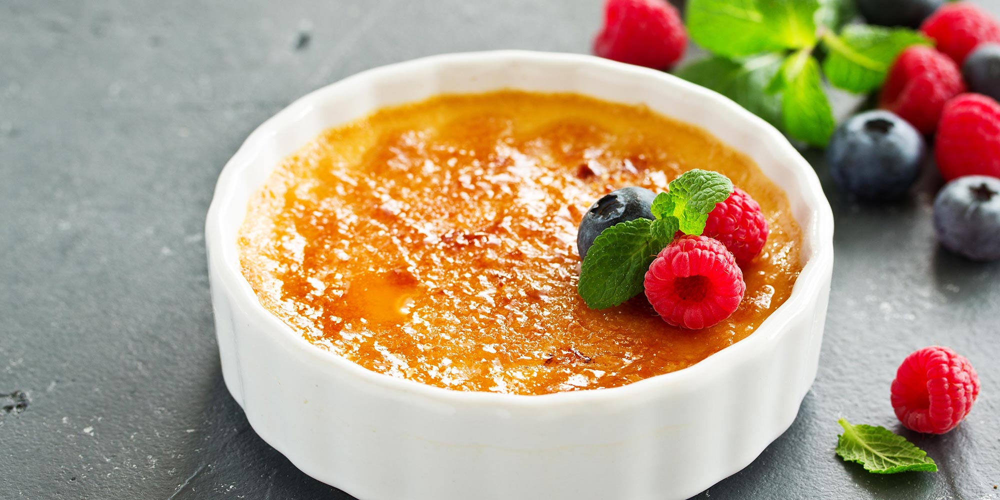

Créme Brulèe

Description
This traditional French dessert is pairs excellently with a good wine.
Ingredients
- Eggs
- Milk
- Whipped Cream
- Sugar
- Brown sugar
- Vanilla pods or vanilla escence
Steps
- Put the whipped cream and milk on a pan on low heat and let boil. Once it boils, turn the heat off and let cool for 10-15 minutes until warm
- In the meantime, mix 4 egg yolks and all the sugar gently until most of the sugar is dissolved
- Once the cream and milk mixture is warm, pour a little bit while filtering onto the eggs yolks and sugar
- Mix gently without generating any froth. Once all the sugar is dissolved, pour the rest of the cream and sugar, again, while filtering
- Pour the mixture onto the recipients
- Cook for 45-60 minutes at 100°C
- Let cool and put in fridge 2-3 hours
- Sparkle brown sugar on top and burn with the help of a blowtorch